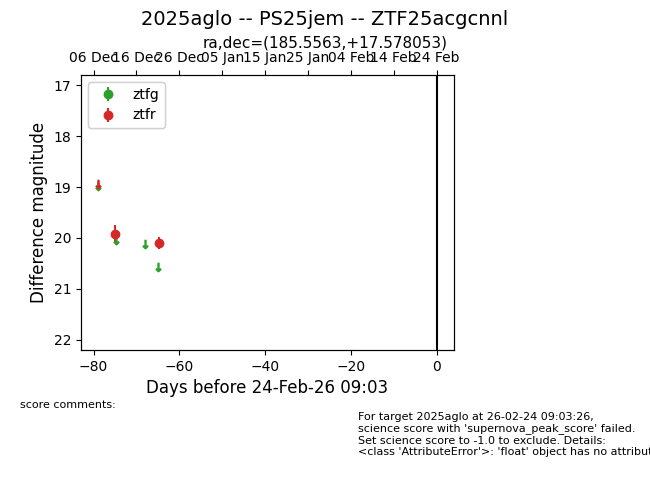
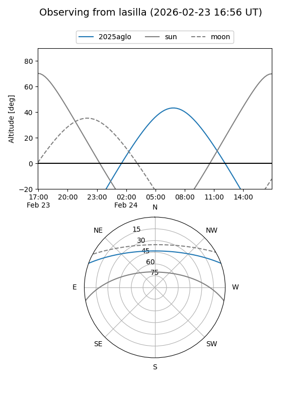
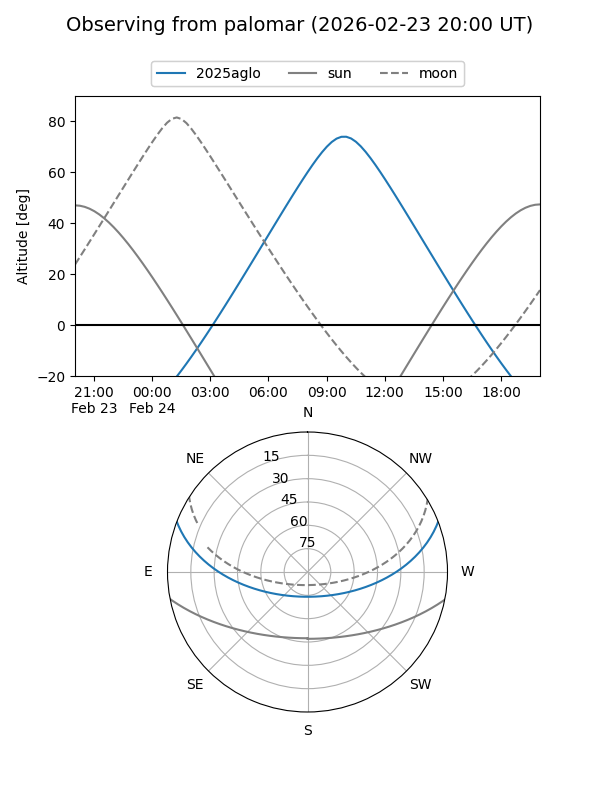

2025aglo
Target 2025aglo at 2025-12-31 17:00
Aliases and brokers:
FINK:
Lasair:
ALeRCE:
TNS:
YSE:
alt names
ZTF25acgcnnl (ztf,fink_ztf)
2025aglo (tns,yse)
PS25jem (panstarrs)
Coordinates:
equatorial (ra, dec) = 185.5563,+17.57805
equatorial (HMS+DMS) = 12:22:13.51,+17:34:40.99
galactic (l, b) = (266.1988,+78.30983)
Flags:
Photometry:
last ztfr=20.09
2 ztfr detections
Lightcurve

Visibility


Additional plots